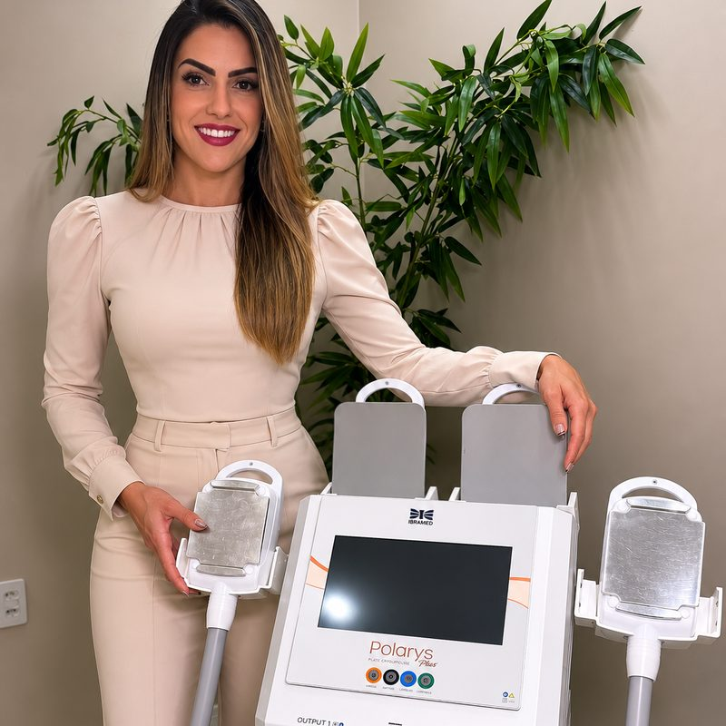
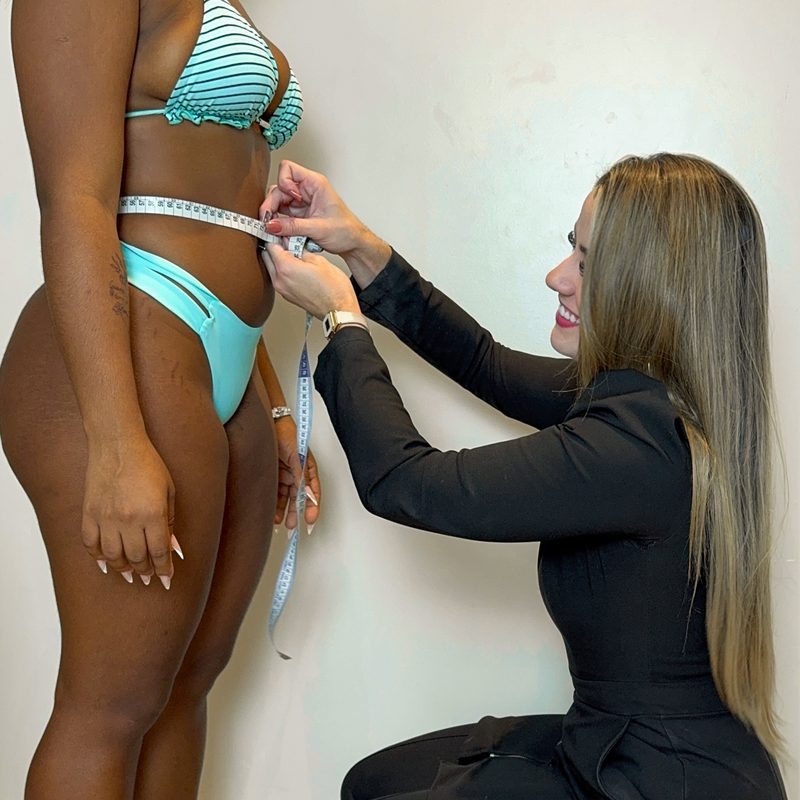
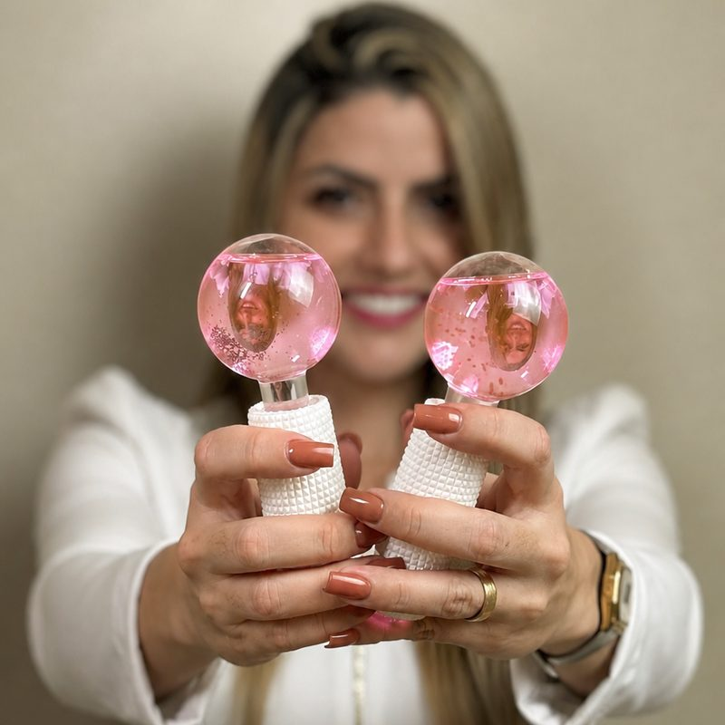
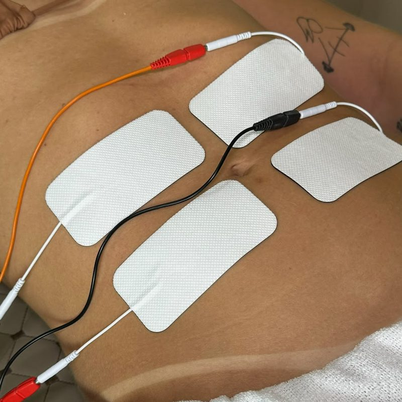
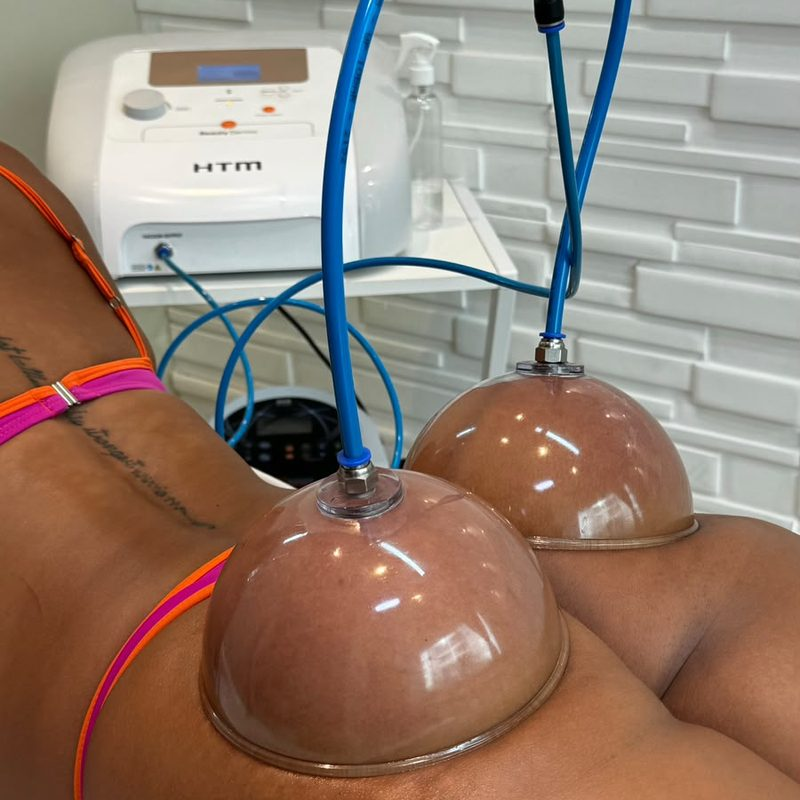
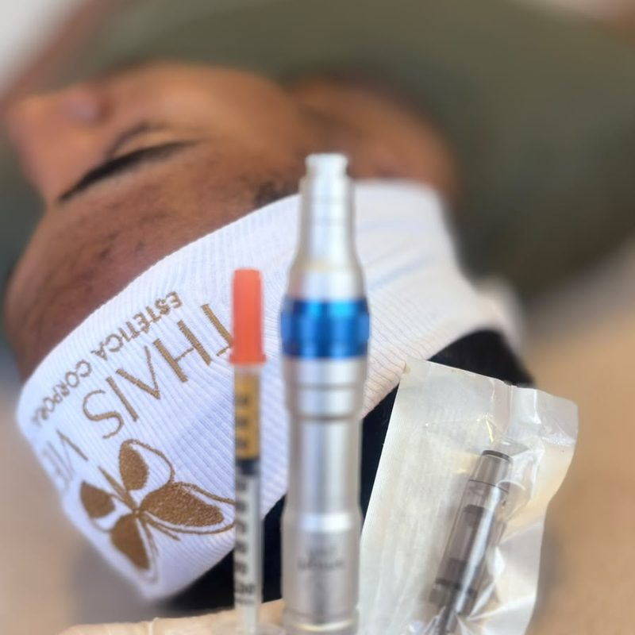
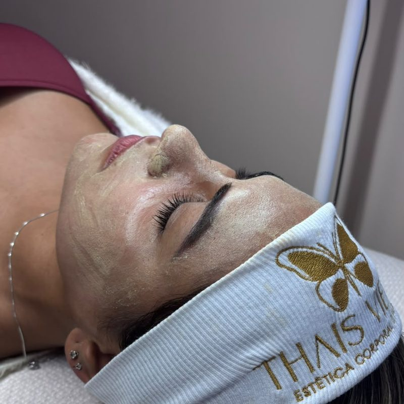

Naturalidade
Cada protocolo é conduzido para realçar os seus traços, nunca para mudar quem você é.
Cada pele, cada corpo e cada objetivo pedem uma estratégia diferente. Por isso o atendimento é individualizado do começo ao fim, com técnica, cuidado e acompanhamento em cada etapa.

Cada protocolo é conduzido para realçar os seus traços, nunca para mudar quem você é.
A avaliação define a estratégia ideal para o seu tipo de pele, corpo e objetivo.
Seis anos de prática na estética, com cuidado antes, durante e depois de cada sessão.

Há 6 anos atuo na área da estética e, ao longo dessa trajetória, fui entendendo que cuidar da beleza vai muito além de realizar um procedimento.
Cada pele, cada corpo e cada objetivo precisam de uma estratégia diferente.
Hoje, uno minha experiência na estética à minha formação em Biomedicina para oferecer um atendimento individualizado, com técnica, cuidado e acompanhamento em cada etapa.
Thais Vieira
Me chame no WhatsAppEscolha a categoria e conheça cada tratamento. Na dúvida sobre qual é o ideal para você, agende uma avaliação sem compromisso.
Para uma pele mais iluminada, viçosa e uniforme, com aquele aspecto de pele bem cuidada.
Quero esse protocoloUm protocolo completo de renovação, luminosidade e revitalização para transformar o aspecto da pele.
Quero esse protocoloPara revitalizar, renovar e melhorar a textura da pele, devolvendo viço e aparência saudável.
Quero esse protocoloProtocolo personalizado para equilibrar a oleosidade, desobstruir os poros e melhorar a aparência da acne.
Quero esse protocoloPara uma pele mais uniforme e iluminada, trabalhando a aparência das manchas e diferenças de tonalidade.
Quero esse protocoloPara suavizar a textura, melhorar a aparência dos poros e deixar a pele mais lisa e refinada.
Quero esse protocoloPara recuperar a hidratação, luminosidade e aspecto descansado da pele.
Quero esse protocoloPara estimular a renovação e melhorar firmeza, textura, viço e aparência dos sinais do tempo.
Quero esse protocoloUm cuidado completo que combina diferentes técnicas para tratar as necessidades específicas de cada corpo.
Quero esse protocoloPara uma sensação de leveza, bem-estar e corpo mais desinchado.
Quero esse protocoloProtocolo focado nos glúteos para valorizar o contorno e potencializar a aparência da região.
Quero esse protocoloTratamento personalizado para melhorar a textura, firmeza e aparência da pele.
Quero esse protocoloProtocolo personalizado para quem busca definição, harmonia e melhora do contorno corporal.
Quero esse protocoloPlanejamento individualizado para tratar áreas com gordura localizada, de acordo com a avaliação.
Quero esse protocoloProtocolo personalizado para áreas específicas de gordura localizada, conforme avaliação.
Quero esse protocoloTratamento direcionado aos flancos para trabalhar a gordura localizada e o contorno da região.
Quero esse protocoloPlanejamento individual que pode incluir outras regiões, conforme a avaliação e o objetivo de cada paciente.
Quero esse protocoloTodos os protocolos são personalizados de acordo com a avaliação, objetivo e necessidades de cada paciente.
Bastidores dos atendimentos no consultório, no Riviera, em Macaé-RJ.







A terapia combinada continua sendo uma das maiores aliadas na redução de medidas de forma não invasiva, na melhora da flacidez e do contorno corporal. Quando bem indicada e associada a um protocolo personalizado, os resultados fazem toda a diferença.
Quero uma avaliaçãoDepoimentos de exemplo — serão substituídos pelos depoimentos reais das clientes.
Fui super bem acolhida desde a avaliação. A Thais explica cada etapa do protocolo e o resultado ficou natural, do jeitinho que eu queria.
Minha pele nunca esteve tão bonita. O atendimento é caprichado, o ambiente é limpo e a gente sai de lá renovada.
Faço as sessões toda semana e a diferença no inchaço é visível. Profissional atenciosa e muito cuidadosa.
A avaliação é o momento de entender a sua necessidade e montar o protocolo ideal. Fale comigo e agende o seu horário.
Agendar minha avaliaçãoAtendimento com hora marcada. Envie uma mensagem para consultar disponibilidade, valores e tirar suas dúvidas.
Rua Porto Velho, 590 — Riviera, Macaé/RJ
Segunda a sábado, com hora marcada
 © OpenStreetMap
© OpenStreetMap